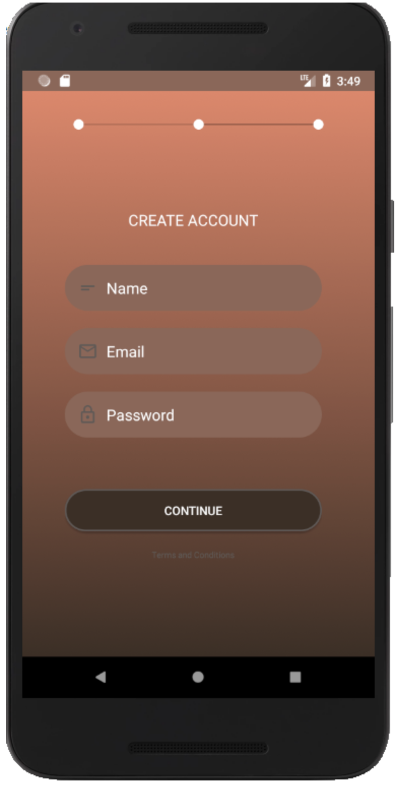
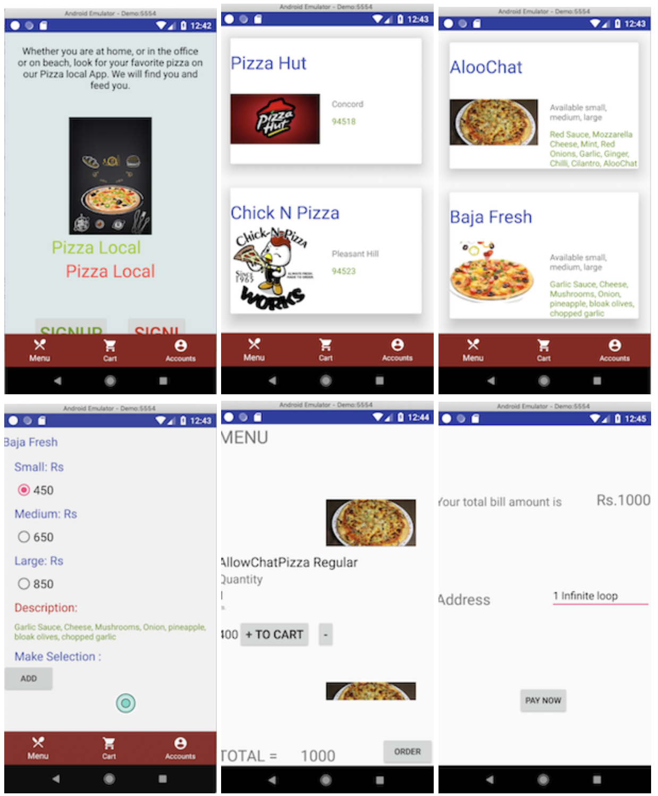
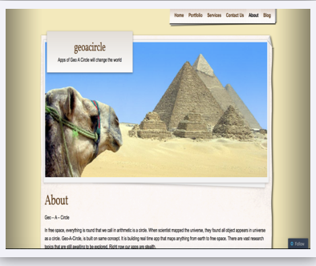

Portfolio
Author Reena Singh
First Project - Graphic Design
Worked to create with Various Graphic Design projects that includes Photoshop: (typography, Image Collage, Posters, Logo, CD Case Covers).
- Illustrator Projects: Icon Design, Vector Graphics, Tex6le Graphics, Texture Graphics, Wordless Drawing, Assets Crea6on for Web and more
- Documen6ng Assignments using MicrosoY Words, Excel and email communica6on through outlook.

Second Project - Android Mobile Apps
Pizza Local: Designing and Developing E-commerce Shopping Applica6on Similar to Food App to run on Android Phones. User can buy pizza through this applica6on. User can view menu by category and can add to Shopping Cart. User can purchase food item online and do to choose cash on delivery op6on.
To-Do List: An Android to-do list app that uses SQLite Database for data storage. On Clicking categories e.g., groceries following is the features get ac6vated to add list.
News Reader: Retrieve RSS Feed JSON data from top site of News and display on screen with images, headlines and brief.
Android Environment: Android Studio, Java, MySQL, PHP, web hos6ng, c-Panel, RSS Feed, XML Parser, JSON.

Third Project - Website
- Designing and Developing Blog using Word-press as Instructed at Diablo Valley College. Blogging and upda6ng using CMS plaTorm Word-press.
-
Developed mobile-friendly versions of websites, using different plug-ins & themes in Word-press.
- Modern Web Development using Python, Java, Javascript, Html, CSS using Apache Server. Also Worked on
- various mini projects using Python, Javascript project on Cookies
